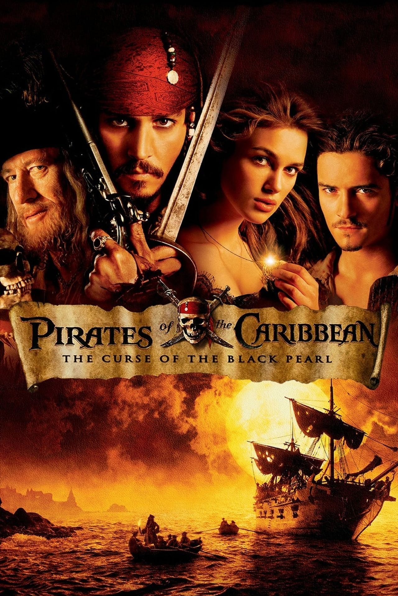
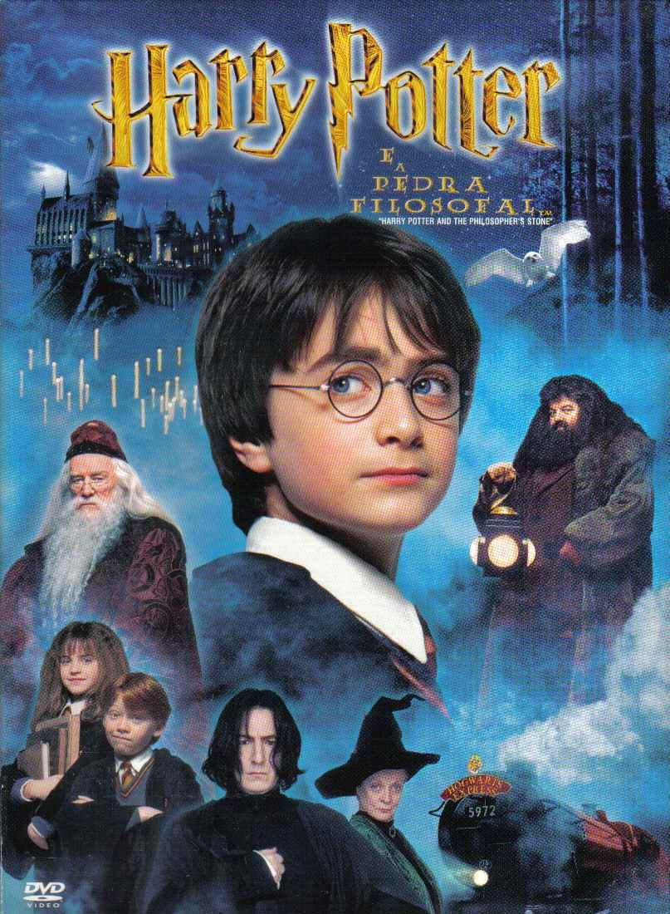
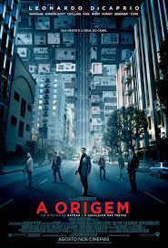

Estante de Filmes
Sua biblioteca à um clique de distância
Interestelar
Sinopse
Após ver a Terra consumindo boa parte de suas reservas naturais, um grupo de astronautas recebe a missão de verificar
possíveis planetas para receberem a população mundial, possibilitando a continuação da espécie. Cooper (Matthew McConaughey)
é chamado para liderar o grupo e aceita a missão sabendo que pode nunca mais ver os filhos. Ao lado de Brand (Anne Hathaway),
Jenkins (Marlon Sanders) e Doyle (Wes Bentley), ele seguirá em busca de uma nova casa. Com o passar dos anos, sua filha Murph
(Mackenzie Foy e Jessica Chastain) investirá numa própria jornada para também tentar salvar a população do planeta.
Fonte: Adoro Cinema|IMDb
| Data do lançamento premiere |
Diretor |
Roteiro |
Idioma Original |
Gêneros |
| 26 de outubro de 2014 |
Christopher Nolan |
Jonathan Nolan, Christopher Nolan |
Inglês |
Ficção científica, Drama |
Piratas do Caribe - A Maldição do Pérola Negra

Sinopse
Em pleno século XVII, o pirata Jack Sparrow (Johnny Depp) tem seu navio saqueado e roubado pelo capitão Barbossa (Geoffrey Rush) e sua
tripulação.Com o navio de Sparrow, Barbossa invade e saqueia a cidade de Port Royal, levando consigo Elizabeth Swann (Keira Knightley),a filha
do governador (Jonathan Pryce). Decidido a recuperar sua embarcação, Sparrow recebe a ajuda de Will Turner (Orlando Bloom),um grande amigo de
Elizabeth que parte em seu encalço. Porém, o que ambos não sabem é que o Pérola Negra, navio de Barbossa, foi atingido por uma terrível maldição
que faz com que eles naveguem eternamente pelos oceanos e se transformem em esqueletos à noite.
Fonte: Adoro Cinema|IMDb
| Data do lançamento premiere |
Diretor |
Roteiro |
Idioma Original |
Gêneros |
| 28 de junho de 2003 |
Gore Verbinski |
Jay Wolpert, Stuart Beattie |
Inglês |
Ação, Fantasia |
Harry Potter e a Pedra Filosofal

Sinopse
Harry Potter (Daniel Radcliffe) é um garoto órfão de 10 anos que vive infeliz com seus tios, os Dursley. Até que, repentinamente,
ele recebe uma carta contendo um convite para ingressar em Hogwarts, uma famosa escola especializada em formar jovens bruxos.
Inicialmente Harry é impedido de ler a carta por seu tio Válter (Richard Griffiths), mas logo ele recebe a visita de Hagrid (Robbie Coltrane),
o guarda-caça de Hogwarts, que chega em sua casa para levá-lo até a escola. A partir de então Harry passa a conhecer um mundo mágico que jamais
imaginara, vivendo as mais diversas aventuras com seus mais novos amigos, Rony Weasley (Rupert Grint) e Hermione Granger (Emma Watson).
Fonte: Adoro Cinema|IMDb
| Data do lançamento premiere |
Diretor |
Roteiro |
Idioma Original |
Gêneros |
| 4 de novembro de 2001 |
Chris Columbus |
Steve Kloves, J.K. Rowling |
Inglês |
Fantasia, Aventura, Família |
A Origem

Sinopse
Em um mundo onde é possível entrar na mente humana, Cobb (Leonardo DiCaprio) está entre os melhores na arte de roubar segredos valiosos
do inconsciente, durante o estado de sono. Além disto ele é um fugitivo, pois está impedido de retornar aos Estados Unidos devido à morte de Mal
(Marion Cotillard). Desesperado para rever seus filhos, Cobb aceita a ousada missão proposta por Saito (Ken Watanabe), um empresário japonês:
entrar na mente de Richard Fischer (Cillian Murphy), o herdeiro de um império econômico, e plantar a ideia de desmembrá-lo. Para realizar
este feito ele conta com a ajuda do parceiro Arthur (Joseph Gordon-Levitt), a inexperiente arquiteta de sonhos Ariadne (Ellen Page)
e Eames (Tom Hardy), que consegue se disfarçar de forma precisa no mundo dos sonhos.
Fonte: Adoro Cinema|IMDb
| Data do lançamento premiere |
Diretor |
Roteiro |
Idioma Original |
Gêneros |
| 8 de julho de 2010 |
Christopher Nolan |
Christopher Nolan |
Inglês |
Ficção científica, Suspense |
Truque de Mestre

Sinopse
Em Truque de Mestre, acompanhamos Daniel Atlas (Jesse Eisenberg), o carismático líder do grupo de ilusionistas chamado The Four Horsemen.
O que poucos sabem é que, enquanto encanta o público com suas mágicas sob o palco, o grupo também rouba bancos em outros continentes e ainda por cima
distribui a quantia roubada nas contas dos próprios espectadores. Estes crimes fazem com que o agente do FBI Dylan Hobbs (Mark Ruffalo) esteja determinado
a capturá-los de qualquer jeito, ainda mais após o grupo anunciar que em breve fará seu assalto mais audacioso. Para tanto ele conta com a ajuda de Alma Vargas
(Melanie Laurent), uma detetive da Interpol, e também de Thaddeus Bradley (Morgan Freeman), um veterano desmistificador de mágicos que insiste que os
assaltos são realizados a partir de disfarces e jogos envolvendo vídeos.
Fonte: Adoro Cinema|IMDb
| Data do lançamento premiere |
Diretor |
Roteiro |
Idioma Original |
Gêneros |
| 21 de maio de 2013 |
Louis Leterrier |
Boaz Yakin, Ed Solomon |
Inglês |
Suspense, Policial |
Inicio